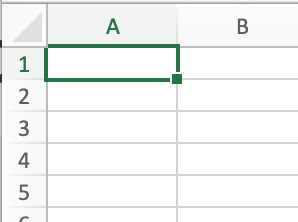

Chapter 1: Preparing Data¶
Merging DataFrames is a common need in neural data science. Often you’ll have data files from individual participants (animals, humans, cells, etc.) that you want to analyze at the group level, so you’ll need to read all the data files in and work with them as one large DataFrame. In this chapter we learn how to do this.
import pandas as pd
To read a single file into a dataframe, use the following format:
variable = pd.read_csv('filename.csv')
For example, this reads a file named fav_colour.csv and saves it as a pandas DataFrame called colour_dat:
colour_dat = pd.read_csv('fav_colour.csv')
We can see the resulting DataFrame by executing the name of the variable:
colour_dat
| Participant num | Fav Colour | |
|---|---|---|
| 0 | 1 | blue |
| 1 | 2 | red |
| 2 | 3 | green |
| 3 | 4 | purple |
| 4 | 5 | red |
| 5 | 6 | green |
| 6 | 7 | orange |
| 7 | 8 | yellow |
| 8 | 9 | yellow |
| 9 | 10 | pink |
Use a for loop to read in multiple files:¶
In many data science cases, we have data in multiple files. For example, if we run an experiment with human participants, we might have a data file from each participant, but for group analysis we’ll want to combine them all into one big DataFrame. This is a great use case for looping, since we’re doing the same thing (reading a file into a DataFrame) multiple times.
First, create a list of the files, Later we will loop through this list.
filenames = ['s1.csv', 's2.csv', 's3.csv']
Next, we create an empty list to append the files to. Note that what we’re doing here doesn’t actually create one big DataFrame (we’ll see how to do that in the next chapter). For now, we’re creating a list in which each list item is the DataFrame from one of the files we read. We name the list in a way that makes it obvious that it’s a list of DataFrames.
df_list = []
Finally, use a for loop to read the files in. This will cycle through the items in the filenames list; each time through the loop, filename has the value of the current file name, and we used the DataFrame append() method to add the data from that file to
for filename in filenames:
df_list.append(pd.read_csv(filename))
When we view the contents of the list, we see each dataset, with its two columns (with headers saying what they are), and commas separating the list entries, as is normal.
df_list
[ trial RT
0 1 0.508971
1 2 0.389858
2 3 0.404175
3 4 0.269520
4 5 0.437765
5 6 0.368142
6 7 0.400544
7 8 0.335198
8 9 0.341722
9 10 0.439583,
trial RT
0 1 0.433094
1 2 0.392526
2 3 0.396831
3 4 0.417988
4 5 0.371810
5 6 0.659228
6 7 0.411051
7 8 0.409580
8 9 0.486828
9 10 0.468912,
trial RT
0 1 0.322099
1 2 0.396106
2 3 0.384297
3 4 0.364524
4 5 0.454075
5 6 0.494156
6 7 0.492787
7 8 0.506836
8 9 0.340722
9 10 0.704491]
The output above isn’t nicely formatted as a pandas DataFrame, because Python is treating the DataFrames as list entries. But, if we ask to see one of the list entries, things look prettier:
df_list[0]
| trial | RT | |
|---|---|---|
| 0 | 1 | 0.508971 |
| 1 | 2 | 0.389858 |
| 2 | 3 | 0.404175 |
| 3 | 4 | 0.269520 |
| 4 | 5 | 0.437765 |
| 5 | 6 | 0.368142 |
| 6 | 7 | 0.400544 |
| 7 | 8 | 0.335198 |
| 8 | 9 | 0.341722 |
| 9 | 10 | 0.439583 |
Adding columns of data to a DataFrame¶
One simple way to combine data is to add a column from one DataFrame to another. We can do this for RT from each participant.
First we take the first data file, from df_list, and make it just a free-standing DataFrame called df
df = df_list[0]
Now we add the data from participant 2 as a new column in df. pandas knows to make a new column if you assign something to a column named that doesn’t already exist. In this case we’re adding a new column called s2.
Since participant 2’s data are in the second entry in df_list, we use df_list[1]. We also need to specify which column to copy over, which we do by specifying ['RT']
df['s2'] = df_list[1]['RT']
df
| trial | RT | s2 | |
|---|---|---|---|
| 0 | 1 | 0.508971 | 0.433094 |
| 1 | 2 | 0.389858 | 0.392526 |
| 2 | 3 | 0.404175 | 0.396831 |
| 3 | 4 | 0.269520 | 0.417988 |
| 4 | 5 | 0.437765 | 0.371810 |
| 5 | 6 | 0.368142 | 0.659228 |
| 6 | 7 | 0.400544 | 0.411051 |
| 7 | 8 | 0.335198 | 0.409580 |
| 8 | 9 | 0.341722 | 0.486828 |
| 9 | 10 | 0.439583 | 0.468912 |
One issue with this is that s1’s data is called “RT”, but we might want to call it “s1”. We can rename the column with pd.rename(), using a dictionary to specify the mapping between old and new names. Note we have to assign the output of df.rename() back to df, because .rename() is a method that produces output, but doesn’t, by default, change the contents of what it takes as input. (If you don’t understand this, we go into more detail later.)
df = df.rename(columns={'RT':'s1'})
df
| trial | s1 | s2 | |
|---|---|---|---|
| 0 | 1 | 0.508971 | 0.433094 |
| 1 | 2 | 0.389858 | 0.392526 |
| 2 | 3 | 0.404175 | 0.396831 |
| 3 | 4 | 0.269520 | 0.417988 |
| 4 | 5 | 0.437765 | 0.371810 |
| 5 | 6 | 0.368142 | 0.659228 |
| 6 | 7 | 0.400544 | 0.411051 |
| 7 | 8 | 0.335198 | 0.409580 |
| 8 | 9 | 0.341722 | 0.486828 |
| 9 | 10 | 0.439583 | 0.468912 |
Reindexing DataFrames¶
The index of a DataFrame is the set of labels for rows. Just as columns have names, or labels, rows have indexes. By default, these indexes are just numbers, starting from 0. But, you can change the index to anything you want, such as months of the year, participant ID codes, etc.. You can also use the index to sort the DataFrame, or access specific rows.
If you’re familiar with Excel or other spreadsheet software, you’re familiar with indices - they are the row numbers in grey that appear on the left side of the spreadsheet:
In pandas, indexes have some “superpowers” relative to Excel: firstly, although they are numbers by default, you can change them top whatever you want. Secondly, a DataFrame can have more than one index (multi-indexing, which we’ll cover later).
The DataCamp lesson introduces the (convenient, but not universal) convention of calling the individual labels for rows indices, while indexes refers to the more general class of labeling rows. So if we’re referring to the sets of labels for two different DataFrames, we’d call them “indexes”, but if we’re referring to the row labels then the set of labels for one DataFrame can be referred to as its “indices”. On the other hand, if you find this a bit confusing it’s not the most important thing to keep straight in your head. The important thing to know is that DataFrame rows have indices, just like columns have column labels.
Carrying on with our sample data from above, we could use trial as the index for our data, rather than having it as a column within the data. If we’ve already loaded the data, we can do this with the .set_index() method:
df.set_index('trial')
| s1 | s2 | |
|---|---|---|
| trial | ||
| 1 | 0.508971 | 0.433094 |
| 2 | 0.389858 | 0.392526 |
| 3 | 0.404175 | 0.396831 |
| 4 | 0.269520 | 0.417988 |
| 5 | 0.437765 | 0.371810 |
| 6 | 0.368142 | 0.659228 |
| 7 | 0.400544 | 0.411051 |
| 8 | 0.335198 | 0.409580 |
| 9 | 0.341722 | 0.486828 |
| 10 | 0.439583 | 0.468912 |
However, if you already know there’s a column in your data that you want to use as the index, you can specify that when you first import the data, using the index_col= argument to pd.read_csv():
df_list = []
for filename in filenames:
df_list.append(pd.read_csv(filename, index_col='trial'))
df_list[0]
| RT | |
|---|---|
| trial | |
| 1 | 0.508971 |
| 2 | 0.389858 |
| 3 | 0.404175 |
| 4 | 0.269520 |
| 5 | 0.437765 |
| 6 | 0.368142 |
| 7 | 0.400544 |
| 8 | 0.335198 |
| 9 | 0.341722 |
| 10 | 0.439583 |
Some important things to note here:
Compared to the output earlier, which had 3 columns, the output here only has two columns. In fact the first “column” in a DataFrame is the index, not an actual column. Since we used
trialas the index here, we don’t have a separate, unlabeled “column” of index values starting from 0, as we did earlier. I’m using “column” in quotes to refer to the index because it’s not treated as a column by pandas - it’s the index.we put
'trial'in quotation marks, because it’s a stringnote that in the above command, the
pd.read_csv()command is embedded inside the.append()method. The argument topd.read_csv()needs to be inside the parentheses for that command, and not the outer parentheses that enclose the input todf_list.append()
Applications of reindexing¶
Reindexing can be useful if you have, or anticipate, missing data. For example, here’s some data from three different rats who were timed running through a maze. This was an 8-day study, but not every rat was tested every day. So one animal may have data from days 1-3 and 5-8 of the study, but not day 4. When we import and combine data, though, we want to ensure that the indexing of the data reflects the days they were tested on (e.g., if a rat missed day 4, we want their day 5 data to have the index ‘5’ even though that would be the fourth data point we have for them).
When we load in the data, we find that it doesn’t have a column that reflects the days that each animal was tested on, so each data set is indexed sequentially from 0:
maze_files = ['maze_data_1.csv', 'maze_data_2.csv', 'maze_data_3.csv']
maze_list = []
for filename in maze_files:
maze_list.append(pd.read_csv(filename))
maze_list
[ maze_time
0 6.00
1 7.56
2 2.17
3 2.39
4 5.60
5 8.94
6 2.95
7 3.30,
maze_time
0 7.32
1 4.12
2 6.28
3 4.20
4 2.11
5 4.98
6 7.44,
maze_time
0 2.55
1 4.00
2 6.00
3 8.38
4 6.53
5 3.01]
Although the files aren’t indexed, but we have a record (written in a lab notebook) of which days each rat was tested on:
r1_days = ['day1', 'day2', 'day3', 'day4', 'day5', 'day6', 'day7', 'day8']
r2_days = ['day1', 'day2', 'day3', 'day5', 'day6', 'day7', 'day8']
r3_days = ['day1', 'day2', 'day4', 'day5', 'day6', 'day7']
So we can use this information, along with the .reindex() method, to set the indexing appropriately for each animal. First we have to add the list of days on which testing actually occurred to each rat’s data file, because we can only reindex from a column within the DataFrame.
(Note: there are ways to do this more efficiently using looping, but for now we’ll focus on reindexing and not looping.)
maze_list[0]['days'] = r1_days
maze_list[1]['days'] = r2_days
maze_list[2]['days'] = r3_days
maze_list
[ maze_time days
0 6.00 day1
1 7.56 day2
2 2.17 day3
3 2.39 day4
4 5.60 day5
5 8.94 day6
6 2.95 day7
7 3.30 day8,
maze_time days
0 7.32 day1
1 4.12 day2
2 6.28 day3
3 4.20 day5
4 2.11 day6
5 4.98 day7
6 7.44 day8,
maze_time days
0 2.55 day1
1 4.00 day2
2 6.00 day4
3 8.38 day5
4 6.53 day6
5 3.01 day7]
Then we specify the days column as the index in each DataFrame:
maze_list[0] = maze_list[0].set_index('days')
maze_list[1] = maze_list[1].set_index('days')
maze_list[2] = maze_list[2].set_index('days')
maze_list
[ maze_time
days
day1 6.00
day2 7.56
day3 2.17
day4 2.39
day5 5.60
day6 8.94
day7 2.95
day8 3.30,
maze_time
days
day1 7.32
day2 4.12
day3 6.28
day5 4.20
day6 2.11
day7 4.98
day8 7.44,
maze_time
days
day1 2.55
day2 4.00
day4 6.00
day5 8.38
day6 6.53
day7 3.01]
So now each rat’s DataFrame is indexed by day numbers, and the days with no data are not represented in the DataFrame. But if we want all DataFrames to contain rows (and indexes) for all days, we can do this. As it happens, the first rat’s data is complete - it has data from all of the study days. So we can use this as the index for the other datasets. (If we didn’t have one data set that was complete, we could make a list containing all the indices we wanted, and use that to reindex).
Pay attention below to the fact that the input to .reindex() is maze_list[0].index — the index of maze_list[0] — and not just maze_list[0].
maze_list[1] = maze_list[1].reindex(maze_list[0].index)
maze_list[2] = maze_list[2].reindex(maze_list[0].index)
maze_list
[ maze_time
days
day1 6.00
day2 7.56
day3 2.17
day4 2.39
day5 5.60
day6 8.94
day7 2.95
day8 3.30,
maze_time
days
day1 7.32
day2 4.12
day3 6.28
day4 NaN
day5 4.20
day6 2.11
day7 4.98
day8 7.44,
maze_time
days
day1 2.55
day2 4.00
day3 NaN
day4 6.00
day5 8.38
day6 6.53
day7 3.01
day8 NaN]
Reindexing is useful in some cases. However, in other cases it’s not really necessary. For example, if we wanted to merge the data from all three rats into one DataFrame, we could do so (similar to the example with RT data earlier) without reindexing, and pandas would automatically fill in the missing data with NaNs:
maze_files = ['maze_data_1.csv', 'maze_data_2.csv', 'maze_data_3.csv']
r1_days = ['day1', 'day2', 'day3', 'day4', 'day5', 'day6', 'day7', 'day8']
r2_days = ['day1', 'day2', 'day3', 'day5', 'day6', 'day7', 'day8']
r3_days = ['day1', 'day2', 'day4', 'day5', 'day6', 'day7']
maze_list = []
for filename in maze_files:
maze_list.append(pd.read_csv(filename))
maze_list[0]['days'] = r1_days
maze_list[1]['days'] = r2_days
maze_list[2]['days'] = r3_days
maze_list[0] = maze_list[0].set_index('days')
maze_list[1] = maze_list[1].set_index('days')
maze_list[2] = maze_list[2].set_index('days')
rat_df = maze_list[0]
rat_df = rat_df.rename(columns={'maze_time':'r1'})
rat_df['r2'] = maze_list[1]
rat_df['r3'] = maze_list[2]
rat_df
| r1 | r2 | r3 | |
|---|---|---|---|
| days | |||
| day1 | 6.00 | 7.32 | 2.55 |
| day2 | 7.56 | 4.12 | 4.00 |
| day3 | 2.17 | 6.28 | NaN |
| day4 | 2.39 | NaN | 6.00 |
| day5 | 5.60 | 4.20 | 8.38 |
| day6 | 8.94 | 2.11 | 6.53 |
| day7 | 2.95 | 4.98 | 3.01 |
| day8 | 3.30 | 7.44 | NaN |
Bonus Section: Looping¶
Above we noted that it would be more efficient (pythonic) to use a loop to read the files and set the indexes. Below is the same example as above, but using a loop rather than hard-coding the commands for every data file.
maze_files = ['maze_data_1.csv', 'maze_data_2.csv', 'maze_data_3.csv']
r1_days = ['day1', 'day2', 'day3', 'day4', 'day5', 'day6', 'day7', 'day8']
r2_days = ['day1', 'day2', 'day3', 'day5', 'day6', 'day7', 'day8']
r3_days = ['day1', 'day2', 'day4', 'day5', 'day6', 'day7']
# Combine these into a list of lists we can loop through:
days_list = [r1_days, r2_days, r3_days]
maze_list = []
# use enumerate() to allow looping through multiple lists in parallel.
for counter, filename in enumerate(maze_files):
maze_list.append(pd.read_csv(filename))
maze_list[counter]['days'] = days_list[counter]
maze_list[counter] = maze_list[counter].set_index('days')
rat_df = maze_list[0]
rat_df = rat_df.rename(columns={'maze_time':'r1'})
rat_df['r2'] = maze_list[1]
rat_df['r3'] = maze_list[2]
rat_df
| r1 | r2 | r3 | |
|---|---|---|---|
| days | |||
| day1 | 6.00 | 7.32 | 2.55 |
| day2 | 7.56 | 4.12 | 4.00 |
| day3 | 2.17 | 6.28 | NaN |
| day4 | 2.39 | NaN | 6.00 |
| day5 | 5.60 | 4.20 | 8.38 |
| day6 | 8.94 | 2.11 | 6.53 |
| day7 | 2.95 | 4.98 | 3.01 |
| day8 | 3.30 | 7.44 | NaN |
The enumerate() function¶
Note that in the for loop, w use the enumerate() function. This can be handy in situations like this, where we want to loop through two lists “in parallel” — in other words, when we are at the first entry in one list (maze_files) we also want the first entry in the second list (days_list). Normally, whe you loop through a list using for, you assign a value of the current list item to a variable. For example, in for filename in maze_files:, the value of filename is updated with the current list item each time through the loop. Using enumerate(), we assign two values each time through the loop: for counter, filename in enumerate(maze_files):. In this case, counter will enumerate the number of times it’s gone through the loop - i.e, take on a numerical value — the current iteration, while filename will still be the value of the current list item:
for counter, filename in enumerate(maze_files):
print('counter = ' + str(counter) + '; filename = ' + filename)
counter = 0; filename = maze_data_1.csv
counter = 1; filename = maze_data_2.csv
counter = 2; filename = maze_data_3.csv
Arithmetic with Series and DataFrames¶
pandas uses broadcasting when we apply an arithmetic function to a Series or DataFrame. For example, from above here’s our RT data from two participants:
df
| trial | s1 | s2 | |
|---|---|---|---|
| 0 | 1 | 0.508971 | 0.433094 |
| 1 | 2 | 0.389858 | 0.392526 |
| 2 | 3 | 0.404175 | 0.396831 |
| 3 | 4 | 0.269520 | 0.417988 |
| 4 | 5 | 0.437765 | 0.371810 |
| 5 | 6 | 0.368142 | 0.659228 |
| 6 | 7 | 0.400544 | 0.411051 |
| 7 | 8 | 0.335198 | 0.409580 |
| 8 | 9 | 0.341722 | 0.486828 |
| 9 | 10 | 0.439583 | 0.468912 |
RT is in seconds, but often we want to report RT in milliseconds. To do this, we could multiply the entire DataFrame by 1000 (since there are 1000 ms in 1 s), but this would apply to all columns, including trial number:
df * 1000
| trial | s1 | s2 | |
|---|---|---|---|
| 0 | 1000 | 508.971072 | 433.093893 |
| 1 | 2000 | 389.857974 | 392.526034 |
| 2 | 3000 | 404.175466 | 396.830804 |
| 3 | 4000 | 269.520309 | 417.987737 |
| 4 | 5000 | 437.764713 | 371.810078 |
| 5 | 6000 | 368.141756 | 659.228422 |
| 6 | 7000 | 400.544278 | 411.051235 |
| 7 | 8000 | 335.198066 | 409.580168 |
| 8 | 9000 | 341.722042 | 486.828076 |
| 9 | 10000 | 439.583357 | 468.912134 |
So instead, we can apply the math only to specified columns:
df[['s1','s2']] * 1000
| s1 | s2 | |
|---|---|---|
| 0 | 508.971072 | 433.093893 |
| 1 | 389.857974 | 392.526034 |
| 2 | 404.175466 | 396.830804 |
| 3 | 269.520309 | 417.987737 |
| 4 | 437.764713 | 371.810078 |
| 5 | 368.141756 | 659.228422 |
| 6 | 400.544278 | 411.051235 |
| 7 | 335.198066 | 409.580168 |
| 8 | 341.722042 | 486.828076 |
| 9 | 439.583357 | 468.912134 |
pandas also provides methods for applying some common arithmetic operations to DataFrames. This includes simple operation slike addition (.add() and multiplication (.multiply()), but also more complex “convenience functions” like .mean():
df[['s1','s2']].mean()
s1 0.389548
s2 0.444785
dtype: float64
Note that this produces two values, the mean of each column. WHile the default is to apply the function “column-wise”, there’s also an argument that allows us to compute the mean of each row, instead:
df[['s1','s2']].mean(axis=1)
0 0.471032
1 0.391192
2 0.400503
3 0.343754
4 0.404787
5 0.513685
6 0.405798
7 0.372389
8 0.414275
9 0.454248
dtype: float64
By default, these arithmetic methods will ignore any NaN values. However, we can tell pandas to replace NaNs with some other value. For example, let’s use the rat data which had NaN values:
rat_df
| r1 | r2 | r3 | |
|---|---|---|---|
| days | |||
| day1 | 6.00 | 7.32 | 2.55 |
| day2 | 7.56 | 4.12 | 4.00 |
| day3 | 2.17 | 6.28 | NaN |
| day4 | 2.39 | NaN | 6.00 |
| day5 | 5.60 | 4.20 | 8.38 |
| day6 | 8.94 | 2.11 | 6.53 |
| day7 | 2.95 | 4.98 | 3.01 |
| day8 | 3.30 | 7.44 | NaN |
If we wanted to sum the data from rats 1 and 2, we would get NaN results if any inputs were NaN (like day4):
rat_df['r1'].add(rat_df['r2'])
days
day1 13.32
day2 11.68
day3 8.45
day4 NaN
day5 9.80
day6 11.05
day7 7.93
day8 10.74
dtype: float64
But we could use fill_value=0 to tell pandas to treat these as zeros instead:
rat_df['r1'].add(rat_df['r2'], fill_value=0)
days
day1 13.32
day2 11.68
day3 8.45
day4 2.39
day5 9.80
day6 11.05
day7 7.93
day8 10.74
dtype: float64